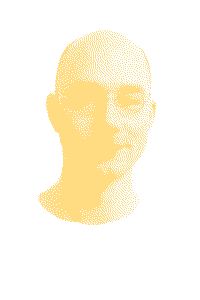

C:\ANDREAS\T\JONSSON>

This is my personal web page
containing links to various projects
and some contact information.
Link Type Description
----------- --------- ------------------------------------------------------------
VirtualXT Project A portable, lightweight IBM PC/XT emulator written in C.
pi8088 Project RaspberryPi hardware validator for testing 8088 emulators.
GitHub Source All my open-source projects are hosted here.
itch.io Store Binary builds for some of my projects can be found here.
YouTube Video -
Linkedin Social -
Twitter Social -
Mastodon Social -
Email Contact -
Copyright (c) 2022 Andreas T Jonsson <mail@andreasjonsson.se>